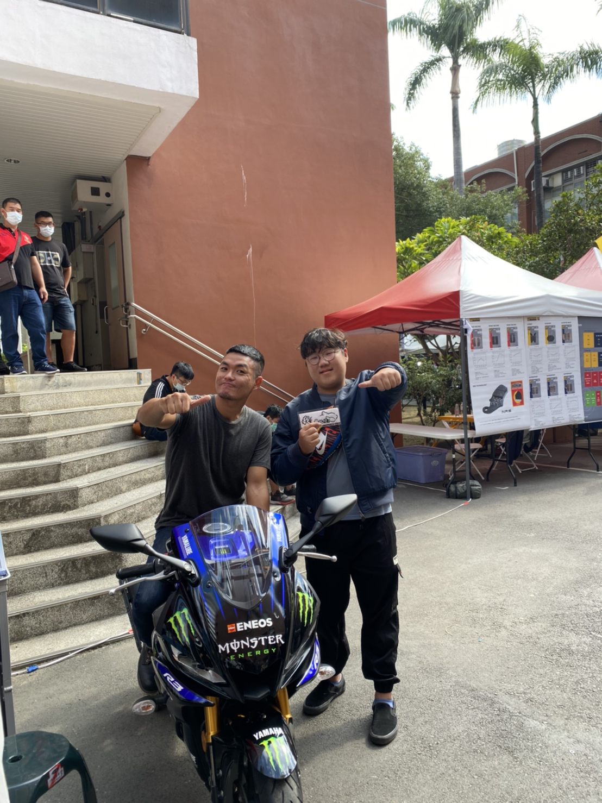
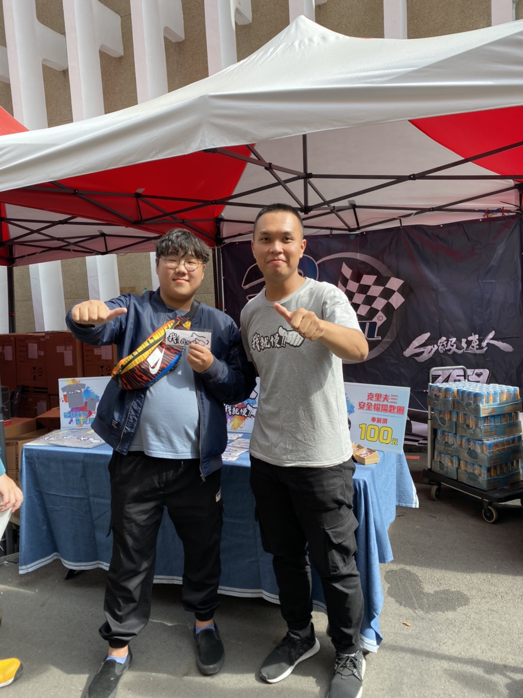

首頁
個人經歷
打FPS遊戲的感想
追韓國女團的心得
對未來的看法
Link 1
Link 2
Link 3
Link 4
我的未來
人生無常，及時行樂
累了來聽首歌吧

未來的期望
都已經走上資訊管理系了，好像有點後悔但又好像還好畢竟本來就對電腦類的有興趣，但是我本身也希望資訊的東西能跟醫療類在有多一點合作但是貼近生活化的， 畢竟生活便利很多懶人病也會跟著多起來，多點預防又或者生病之後能配合著網路的發達讓醫生在幫你醫治的時候也有比較多參考的東西可以看，像是糖尿病就可以 跟醫生配合一個禮拜上傳一次血糖紀錄跟飲食紀錄，不然也可以做個APP來讓患者能夠吃東西之前算過這份餐點要打多少劑量這樣，我希望我以後能做一個能為社會貢獻的人。
希望能改變的事
本來的我身材不錯，但到了國中之後因為運動傷害我有好一陣子都沒有運動到，但是我本身放量又沒有減少導致我身材走樣，所以我希望我第一件事情就是能夠好好減肥下來。 再來就是要好好照顧身體，身體就不是很好了卻因為壞習慣沒有讓我身體好好休息也沒有控制好體重，導致了一些不可逆的病痛出現，我也清楚要活得久才能多看看東西所以我希望， 我能好好對自己的身體不要再一直傷害他了。

勇敢面對不要逃避就一定會成長的
回到頂端